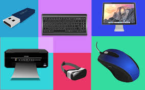

Informática Básica
Aprenda os conceitos fundamentais da informática
Visão geral
Este curso aborda os conceitos básicos da informática, incluindo hardware,
software e redes.
Você aprenderá sobre os componentes de um computador,
como utilizar o sistema operacional, noções de segurança na internet e muito
mais
Introdução à informática
A informática é uma área do conhecimento que envolve o estudo e o
desenvolvimento de tecnologias relacionadas ao processamento,
armazenamento e transmissão de informações.
Ela desempenha um papel
fundamental na sociedade atual, sendo responsável por diversas
transformações nas formas de comunicação, trabalho e entretenimento.
Neste tópico, vamos explorar algumas noções básicas da informática, que
serão essenciais para compreendermos conceitos mais avançados nessa área.
Vamos abordar os seguintes temas:
1.Hardware e Software
Para compreender a informática, é importante entender a diferença entre
hardware e software.
O hardware se refere aos componentes físicos de um
computador, como a unidade central de processamento (CPU), a memória, o
disco rígido e os periféricos, como mouse e teclado.
Já o software engloba os
programas e aplicativos que são executados em um computador.
Introdução à informática
É fundamental compreender como essas duas partes interagem para que um
computador funcione corretamente.
Veremos também alguns exemplos de
hardware e software mais comuns.
2. Sistemas Operacionais
Todo computador precisa de um sistema operacional para funcionar.
O sistema
operacional é o software responsável por gerenciar todos os recursos do
computador e permitir que os usuários interajam com a máquina.
Conheceremos os principais sistemas operacionais existentes e entenderemos
como eles funcionam.
3.Redes de Computadores
A internet é uma parte essencial da nossa vida atual, e o seu funcionamento é
baseado em redes de computadores.
Neste tópico, vamos explorar como as
redes são estruturadas, como os dados são transmitidos entre computadores e
como utilizar a internet de forma segura.
4. Segurança da Informação
Nos dias de hoje, é fundamental entender como proteger nossas informações
pessoais e profissionais de possíveis ameaças virtuais.
Aqui, abordaremos
conceitos básicos de segurança da informação, como senhas seguras,
antivírus, firewall e backup de dados.
5.Aplicações da Informática
Por fim, conheceremos as diversas aplicações da informática em diferentes
áreas, como no trabalho, na educação, na medicina e no entretenimento.
Veremos como a tecnologia tem transformado a forma como realizamos
atividades cotidianas e como a informática está presente em praticamente
todos os aspectos da nossa vida.
Ao final deste tópico, você terá uma visão abrangente sobre a informática e
suas principais áreas de estudo.
Esses conhecimentos serão fundamentais para
compreender os demais tópicos do curso "Informática Básica" e para utilizar a
tecnologia de forma eficiente e segura em sua vida pessoal e profissional.
Conclusão Introdução à informática
O curso de Informática Básica abordou diferentes aspectos
da área, iniciando com a introdução à informática.
O
conhecimento adquirido sobre noções básicas de
hardware permitirá entender o funcionamento dos
componentes físicos de um computador.
Já as noções
básicas de software proporcionam a compreensão do
funcionamento dos programas e sistemas operacionais.
Com esses conhecimentos, os alunos estão preparados
para dar os primeiros passos no mundo da informática.
Noçõesbásicas de hardware
Visão geral
Neste tópico, abordaremos as noções básicas de hardware, que é uma parte
fundamental do curso de informática básica. O hardware refere-se aos
componentes físicos do computador, como a unidade central de
processamento (CPU), memória, disco rígido, placa-mãe, entre outros.
Compreender esses conceitos básicos é essencial para que possamos utilizar
efetivamente um computador.
Componentes principais do hardware
Unidade Central de Processamento (CPU)
A CPU é o "cérebro" do computador, responsável pela execução de tarefas e
processamento de dados.
Ela interpreta e executa as instruções do software,
realizando cálculos, armazenamento temporário de dados e controle de outros
componentes.
Memória
A memória é o local onde os dados e programas são armazenados
temporariamente para serem processados pela CPU.
Existem diferentes tipos
de memória, como a memória RAM (Random Access Memory) e a memória
cache, que têm velocidades de acesso diferentes.
Disco Rígido
O disco rígido é o dispositivo de armazenamento permanente do computador.
Nele, são armazenados os dados do sistema operacional, dos programas e dos
arquivos que utilizamos. É nele que os programas são instalados e o sistema
operacional é executado.
Placa-mãe
A placa-mãe é o componente principal do computador, que conecta todos os
outros componentes entre si.
É responsável por permitir a comunicação entre a
CPU, a memória, o disco rígido e outros dispositivos, como a placa de vídeo,
placa de som, entre outros.
Fonte de alimentação
A fonte de alimentação é responsável por fornecer energia elétrica para os
componentes do computador.
Ela converte a corrente elétrica da tomada em
uma voltagem adequada e distribui essa energia para os diferentes
componentes.
Periféricos
 Os periféricos são dispositivos externos ao computador que nos permitem interagir com o sistema.Alguns exemplos são o teclado, o mouse, o monitor, a impressora, o scanner, entre outros.
Esses dispositivos se conectam à CPU por meio de portas específicas.
Conclusão Noções básicas de hardware
A introdução à informática apresentou os conceitos
fundamentais da área, como a história da computação e a
importância da tecnologia na sociedade atual.
Ao
compreender as noções básicas de hardware, os alunos
estão aptos a realizar manutenções e melhorias em
computadores. Além disso, as noções básicas de software
capacitam os estudantes a utilizar programas e sistemas
operacionais com facilidade.
Assim, o curso proporciona
uma base sólida para o uso da informática no dia a dia.
Noções básicas de software
O que é software?
O que é software?
Software é um conjunto de programas, instruções e dados que permitem que
um computador execute tarefas específicas.
Basicamente, é o componente
intangível do computador - a parte que você não pode tocar fisicamente, mas
que desempenha um papel essencial no funcionamento da máquina.
Os softwares podem ser classificados em dois tipos principais: softwares de
sistema e softwares de aplicação.
O software de sistema é responsável pelo
gerenciamento dos recursos do computador, como o sistema operacional.
Já o
software de aplicação é projetado para atender necessidades específicas dos
usuários, como processadores de texto e navegadores de internet.
Principais tipos de software
Sistemas Operacionais
O sistema operacional é um software básico que permite a comunicação entre o
usuário e o hardware do computador.
Ele fornece uma interface intuitiva e
facilita a execução de tarefas, como abrir programas, salvar arquivos e
conectar-se à internet.
Alguns dos sistemas operacionais mais populares
incluem o Windows, MacOS e Linux.
Aplicativos de Produtividade

Os aplicativos de produtividade são softwares projetados para auxiliar na
realização de tarefas relacionadas ao trabalho, estudo ou entretenimento.
Esses
programas incluem processadores de texto, planilhas eletrônicas,
apresentações de slides e software de edição de imagens e vídeos.
Exemplos
comuns são Microsoft Office, Google Docs e Adobe Photoshop.
Navegadores de Internet
Os navegadores de internet são responsáveis por permitir o acesso à World
Wide Web.
Eles possibilitam a visualização de páginas da web, a execução de
pesquisas, a reprodução de vídeos e a interação com diferentes sites.
Alguns
navegadores populares são Google Chrome, Mozilla Firefox e Microsoft Edge.
Softwares de Segurança
Os softwares de segurança são projetados para manter os computadores
protegidos contra ameaças, como vírus, malware e hackers.
Esses programas
incluem antivírus, firewalls e ferramentas de criptografia. Exemplos conhecidos
são Avast, McAfee e Norton Antivirus.
Softwares de Design Gráfico
Os softwares de design gráfico são utilizados por profissionais criativos para
criar ilustrações, logotipos, imagens e layouts.
Esses programas oferecem
ferramentas avançadas para a manipulação de imagens e a criação de
elementos gráficos. Exemplos populares são Adobe Illustrator, CorelDRAW e
GIMP.
Instalação e Desinstalação de Software
Para instalar um software em um computador, geralmente é necessário baixar o
arquivo de instalação do site oficial ou inserir um CD/DVD de instalação.
Após o
download ou inserção do disco, basta seguir as instruções fornecidas para
concluir o processo de instalação.
Vale ressaltar que é importante ler os
requisitos mínimos do sistema antes de instalar um software, para garantir que
o computador seja compatível.
Para desinstalar um software, normalmente é possível utilizar a opção
"Desinstalar" que acompanha o programa no menu Iniciar do Windows ou nas
configurações do MacOS e Linux.
Essa opção irá remover todos os arquivos e
entradas relacionadas ao software do sistema.
Atualizações de Software
As atualizações de software são lançadas regularmente pelos desenvolvedores
para corrigir falhas, adicionar novos recursos e melhorar a segurança dos
programas.
Essas atualizações podem ser instaladas manualmente pelos
usuários ou configuradas para ocorrerem automaticamente, dependendo das
configurações do sistema.
É altamente recomendado manter os softwares atualizados para garantir o
máximo desempenho e segurança do computador.
Além disso, é importante
lembrar que nem todas as atualizações são gratuitas, e algumas podem exigir
uma licença ou pagamento adicional para serem utilizadas.
Considerações Finais
As noções básicas de software são essenciais para qualquer pessoa que utilize
um computador.
Compreender como os diferentes tipos de software funcionam
e como instalá-los e atualizá-los corretamente é fundamental para aproveitar
todas as possibilidades oferecidas pela tecnologia.
Com o tempo, você se
familiarizará com os diferentes softwares e poderá explorar suas capacidades
ainda mais.
Conclusão Noções básicas de software
O curso de Noções Básicas de Hardware abrangeu temas
como os componentes internos e externos de um
computador, as principais interfaces de conexão e as
técnicas de montagem e manutenção.
Com esses
conhecimentos, os alunos estão preparados para realizar
upgrades e consertos em seus computadores.
Além disso,
a compreensão das noções básicas de software permite a
utilização adequada dos programas e sistemas
operacionais. Assim, o curso proporciona uma base sólida
para a utilização dos recursos tecnológicos.
Exercícios Práticos
Vamos colocar os seus conhecimentos em prática
Exercícios Práticos
Nesta lição, colocaremos a teoria em prática por meio de atividades práticas. Clique nos itens abaixo para conferir cada exercício e desenvolver habilidades práticas que o ajudarão a ter sucesso na disciplina.
Navegando na Internet
Neste exercício, você deverá abrir um navegador de internet e realizar uma pesquisa sobre um tema de sua escolha. Pesquise informações, imagens ou vídeos relacionados ao tema e salve-os em um documento de texto. Em seguida, compartilhe o documento com um colega.
Exercícios Práticos
Vamos colocar os seus conhecimentos em práticaMontando um computador
Neste exercício, você deverá montar um computador utilizando as peças que foram disponibilizadas. Siga o manual de instruções para encaixar cada componente corretamente, garantindo que as conexões estejam firmes. Após a montagem, ligue o computador e verifique se ele inicializa corretamente.Instalando um programa
Neste exercício, você deverá escolher um programa ou aplicativo de sua preferência e realizar sua instalação em um computador. Siga as instruções fornecidas pelo programa durante o processo de instalação e certifique-se de que o programa seja executado corretamente após a conclusão.
Resumo
Vamos rever o que acabamos de ver até agora
O curso de Informática Básica abordou diferentes aspectos da área, iniciando com a introdução à informática. O conhecimento adquirido sobre noções básicas de hardware permitirá entender o funcionamento dos componentes físicos de um computador. Já as noções básicas de software proporcionam a compreensão do funcionamento dos programas e sistemas operacionais. Com esses conhecimentos, os alunos estão preparados para dar os primeiros passos no mundo da informática.
A introdução à informática apresentou os conceitos fundamentais da área, como a história da computação e a importância da tecnologia na sociedade atual. Ao compreender as noções básicas de hardware, os alunos estão aptos a realizar manutenções e melhorias em computadores. Além disso, as noções básicas de software capacitam os estudantes a utilizar programas e sistemas operacionais com facilidade. Assim, o curso proporciona uma base sólida para o uso da informática no dia a dia.
O curso de Noções Básicas de Hardware abrangeu temas como os componentes internos e externos de um computador, as principais interfaces de Resumo Vamos rever o que acabamos de ver até agora conexão e as técnicas de montagem e manutenção. Com esses conhecimentos, os alunos estão preparados para realizar upgrades e consertos em seus computadores. Além disso, a compreensão das noções básicas de software permite a utilização adequada dos programas e sistemas operacionais. Assim, o curso proporciona uma base sólida para a utilização dos recursos tecnológicos.
Questionário
Pergunta 1/6
Qual o nome do curso?Pergunta 2/6
O que é informática?
Questionário
Verifique o seu conhecimento respondendo a algumas perguntas
Pergunta 3/6
Quais são as noções básicas de hardware?
Pergunta 4/6
O que é software?
tarefas no computador
Pergunta 5/6
O que é um sistema operacional?
Pergunta 6/6
Quais são os principais sistemas operacionais utilizados?
Conclusão
Parabéns! Parabéns por concluir este curso! Você deu um passo importante para liberar todo o seu potencial. Concluir este curso não é apenas adquirir conhecimento; trata-se de colocar esse conhecimento em prática e causar um impacto positivo no mundo ao seu redor.